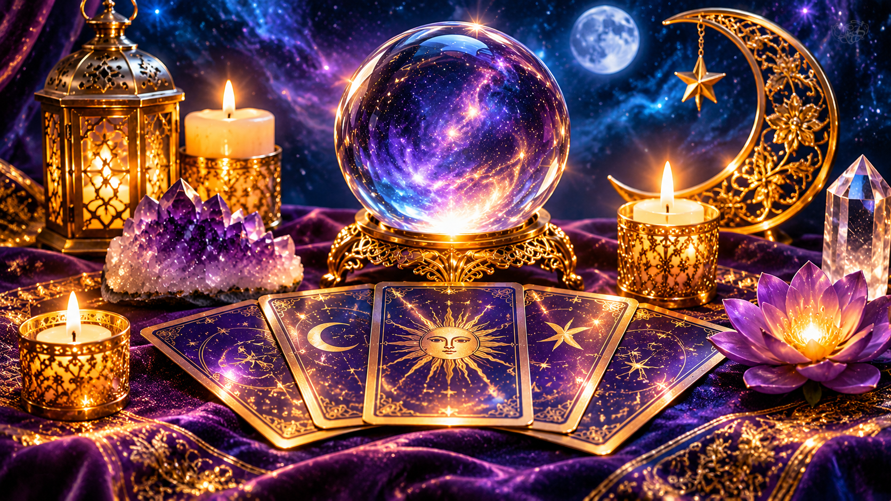

Videncia
Percepciones y mensajes sobre las inquietudes que quieras explorar.
Consultar disponibilidad →Un espacio cercano y respetuoso para explorar mensajes y experiencias desde la práctica espiritual. La información se comparte; las decisiones siempre son tuyas.
La información se comparte desde la práctica espiritual. Cada persona decide libremente cómo interpretarla y qué hacer con ella.
Percepciones y mensajes sobre las inquietudes que quieras explorar.
Consultar disponibilidad →Práctica espiritual enfocada en el bienestar y la armonía personal.
Consultar disponibilidad →
Videncia sobre vínculos y relaciones, sin decidir por ti.
Consultar disponibilidad →Un espacio para compartir y comprender experiencias desde una mirada espiritual.
Consultar disponibilidad →En El Mensajero de la Luz se comparte información desde la videncia, la mediumnidad y otras prácticas espirituales. No se pretende dirigir la vida de nadie ni tomar decisiones en su lugar.
Cada persona conserva la libertad de interpretar lo recibido y elegir su propio camino.
Los servicios tienen carácter espiritual y no sustituyen la atención médica, psicológica, jurídica o financiera.
10 minutos para conocernos y explicar cómo funcionan las consultas, sin compromiso. Las consultas posteriores se acuerdan previamente.
Solicitar primera consultaAtención con cita previa. Mientras activamos el calendario de reservas, puedes solicitar tu horario por WhatsApp. La cita quedará pendiente de confirmación manual.
Consultar horarios por WhatsAppHorario previsto: lunes a sábado de 16:00 a 20:00; domingos de 10:00 a 21:00. Sujeto a confirmación.